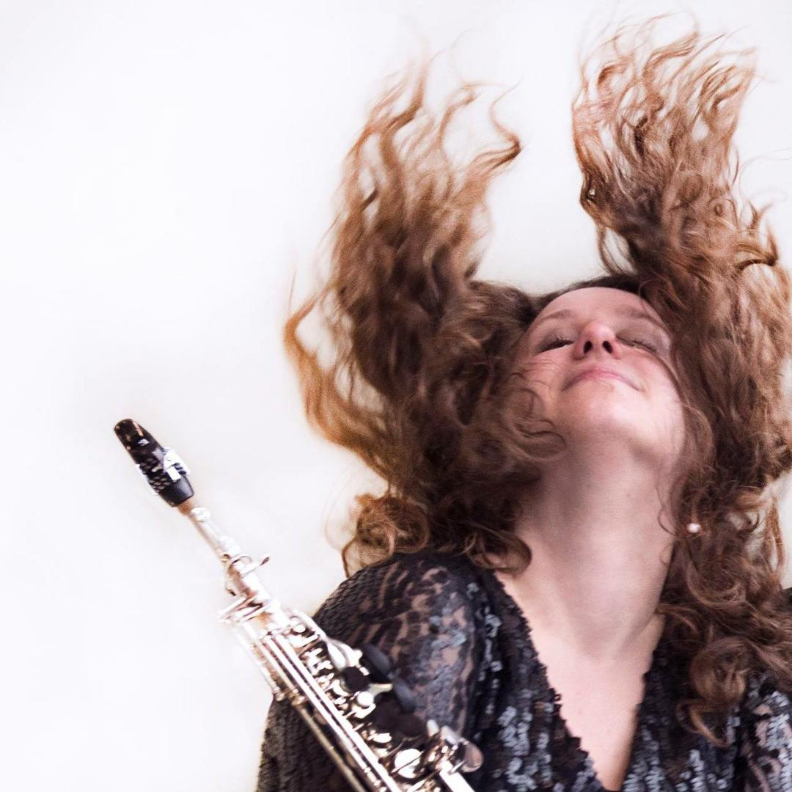
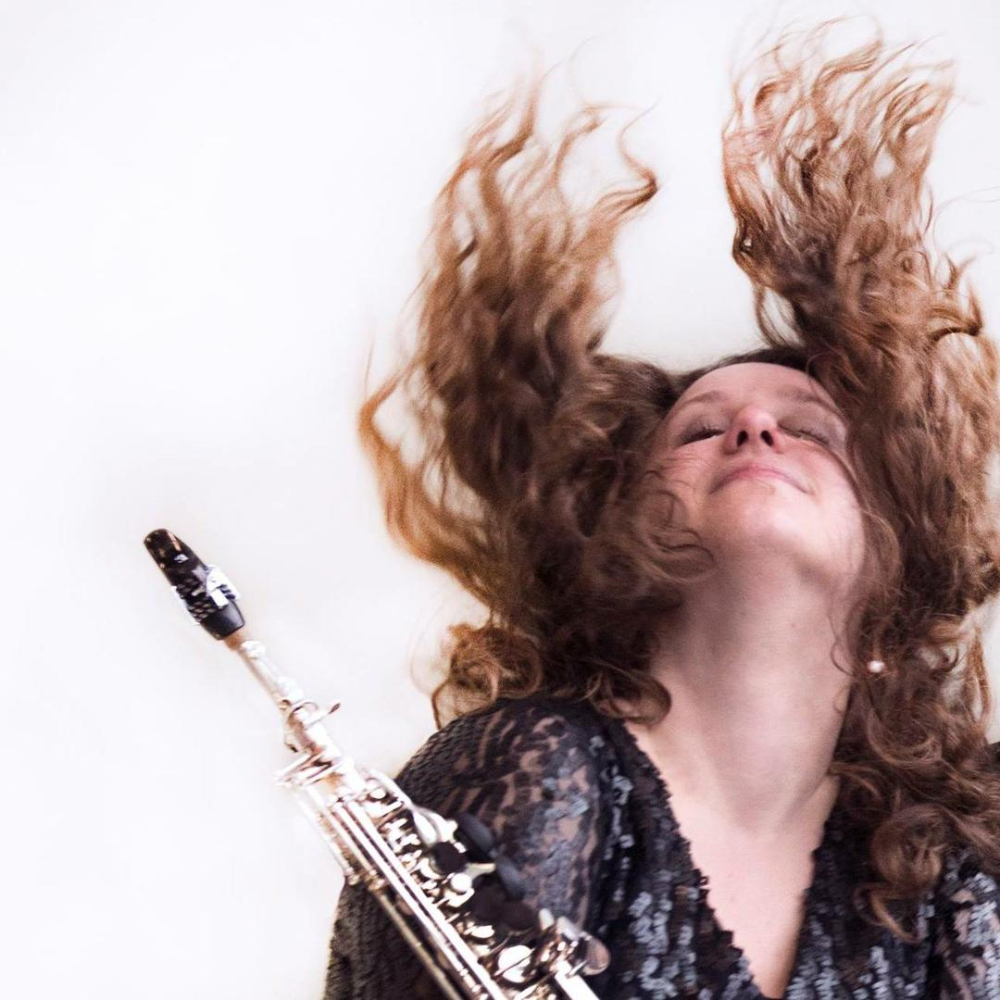

Als jong meisje was Els al betoverd door de prachtige glimmende saxofoon met zoveel klepjes. Het begon als hobby bij de plaatselijke fanfare, maar de hobby werd steeds serieuzer en is uiteindelijk haar werk geworden.
Op het conservatorium ging er een klankwereld voor haar open en hoorde ze wat er allemaal mogelijk was op haar instrument. Zoveel verschillende geluiden, muziekstijlen en sferen zijn er mogelijk met de saxofoon!
Na haar Bachelor- en Masterdiploma klassiek saxofoon met zeer goed gevolg behaald te hebben aan de HKU bij Johan van der Linden, met tussendoor nog een Erasmus uitwisseling naar Stockholm bij Christer Johnsson, is Els haar eigen projecten gaan doen.
Ze houdt van eigenzinnige en creatieve samenwerkingen. Met andere musici, componisten, kunstenaars of zelfs wetenschappers.
Naast haar eigen projecten is Els ook vaak als remplacant te vinden bij gerenommeerde orkesten en ensembles, zoals Orkest de Ereprijs, het NBE, RPhO en het Orkest Koninklijke Marechaussee.
Als docent vindt ze het belangrijk dat leerlingen zich in hun eigen tempo ontwikkelen en schuwt ze middelen als vrije improvisatie, compositie en speciale technieken niet om bij te dragen aan de ontwikkeling van de leerling.
Mijn lesboek is officieel uit en te bestellen! Je krijgt ook een link naar een opname erbij. Voor iedereen die leuke effecten wil leren op de saxofoon! (niveau is ongeveer vanaf 2/3 jaar ervaring).

 

{kind=link}